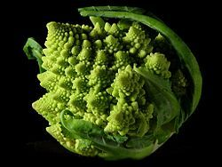
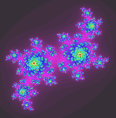
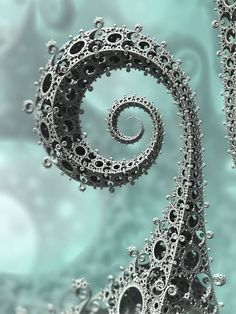

Поняття «фрактал» і «фрактальная геометрія» з'явилися в 70-80-х роках XX
століття. Вони стійко закріпилися в вживанні математиків і програмістів. Слово
«фрактал», що в перекладі з латинської означає розбитий, поділений на частини,
було запропоновано Бенуа Мандельброт, американським математиком, в 1975 році,
з метою позначення нерегулярних самоподібних структур. Мандельброт дав таке
визначення: «фракталом називається структура, що складається з частин, які в
якомусь сенсі подібні цілому». Слід зазначити, що властивість самоподібності
відображає головну особливість природних об'єктів.



Розглядаючи фрактальні об'єкти в різному масштабі, можна легко виявити одні й ті ж основні елементи.